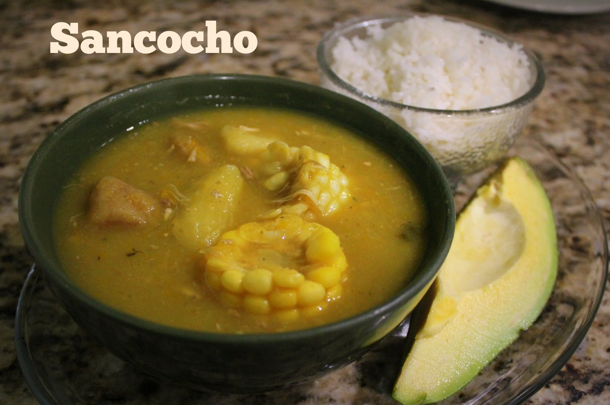
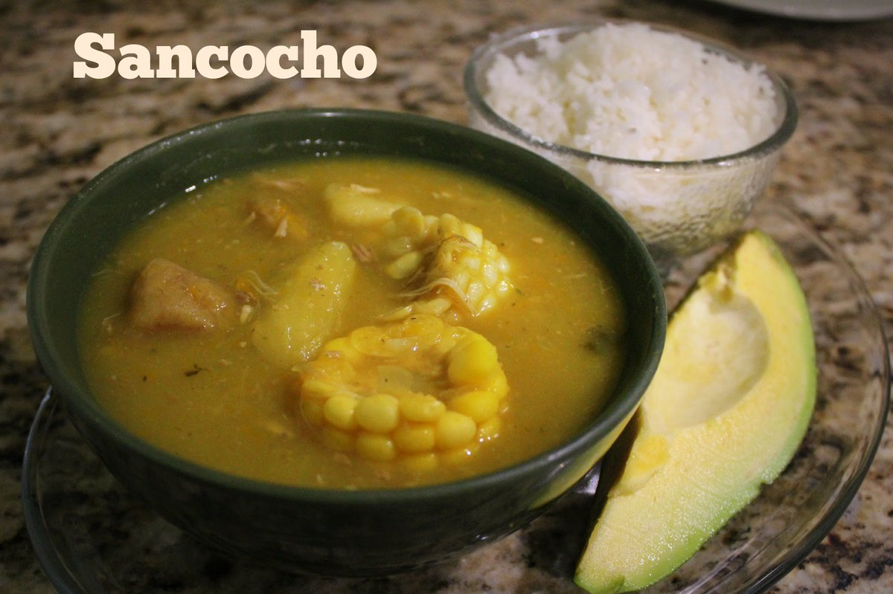

MAGDALENA
Región:
Se encuentra ubicado al noreste del país, en la región Caribe.
PUNTOS DE INTERES
Santa Marta
Minca
La Sierra Nevada
Ciénaga
Santa Marta es una ciudad ubicada en el mar Caribe, en el departamento de Magdalena en el norte de Colombia. Es un puerto ajetreado que también fue el primer asentamiento español en Colombia.
MINCA:Minca es la capital ecológica de la Sierra Nevada de Santa Marta. Entre sus atractivos destacan el río, las cascadas de Marinka, Pozo Azul y Las Piedras, entre otros.
LA SIERRA NEVADA:La Sierra Nevada de Santa Marta es una cordillera de Colombia que constituye por sí mismo un sistema aislado de Cordillera de los Andes, sobre la costa Caribe de Colombia.
CIÉNAGA:Ciénaga es un municipio del departamento colombiano del Magdalena. Se encuentra a orillas del Mar Caribe, junto a la Sierra Nevada de Santa Marta.


GASTRONOMÍA
 
